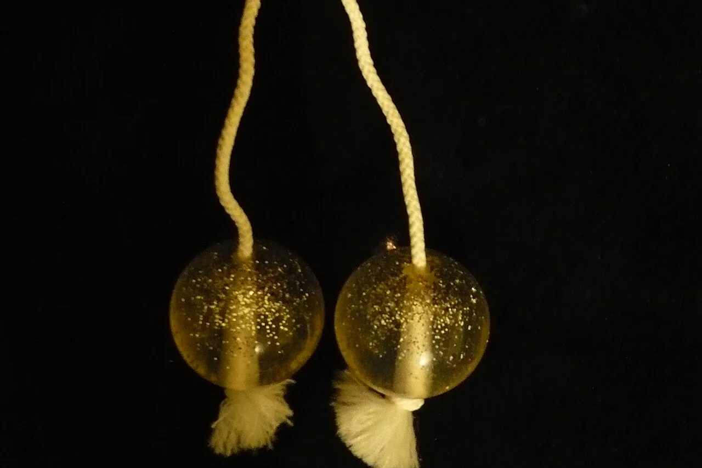
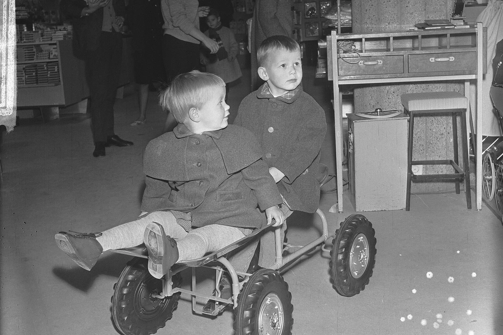

Six Toys With Names That Sound Made Up
Frisbee. Slinky. Silly Putty. Pet Rock. Hula Hoop. Chia Pet. You said them a thousand times without wondering who came up with them, or why.
Read the storyDID WE REALLY PLAY WITH THIS? - TOYS & CHILDHOOD
A set of lawn darts, a toy called Clackers and a science kit with real uranium. We all played with something like it. Looking back, what were we thinking?
Every generation has a toy that makes the next generation say, "They let you play with THAT?" Here are three, with a smile and a little care.
None of these were secrets. They were in toy stores and catalogs, in garages and on playgrounds, and plenty of us have a story about one. Some of us still have a scar.

Four big darts, a pair of plastic rings, and a summer afternoon. Lawn darts were a backyard staple, sold in sets that usually came with four large darts. The game was simple: stand back and throw to land a dart inside the ring on the grass.
Those darts were pointed, and they were meant to be tossed high toward a target on the ground. The U.S. Consumer Product Safety Commission records three children who died from lawn dart incidents and estimated about 670 hospital emergency room visits a year. In December 1988, it banned the sale of lawn darts in the United States.
The commission has repeated since then that any sets still around should be destroyed. If your family's set is in a garage somewhere, it is a memory for the shelf, not for the lawn.

Two hard balls on a string. You moved your hand up and down, and the balls swung and cracked together with a loud, satisfying "clack." By early 1971, newspapers described a popularity surge like the hula hoop's.
Then the warnings began. In February 1971, the U.S. Food and Drug Administration cited injuries and said the plastic balls could sometimes shatter into sharp pieces. Years later, in 1985, federal marshals in Phoenix seized almost 4,600 of a clacker toy called "Ker-Bangers," the Consumer Product Safety Commission announced. The package said "shatterproof." Government tests found the balls either shattered or cracked.
If you got good at it, you probably still remember the rhythm. A good set of Clackers made a sound you could hear down the block, and a child who could keep them going was the star of the playground for a week.

Here is the one that makes people stop scrolling. In 1950, A. C. Gilbert, the toymaker behind the Erector Set, put out the Gilbert U-238 Atomic Energy Lab. It sold for $49.50, which was a lot of money then, and it came with a Geiger counter and small jars of real uranium-bearing ore.
It was meant to be educational, in the optimistic way of the early Atomic Age. Gilbert blamed the high price and the set's sophistication for its short life: it was sold only in 1950 and 1951. Today, a complete set is a prized collectible.
If you never owned one, you are in good company. Most of us got a chemistry set or a microscope instead, and those were exciting enough.

Maybe you threw the darts, maybe you cracked the balls, or maybe you only heard about the uranium kit from a grandparent. Either way, it is fun to look back at what ended up in a childhood toy box, and it is a good reminder of how much the rules for toys have changed.
Which toy did you play with that you would never give a child today? Tell the person next to you.
Which of these did you own? What was the toy your parents said no to, and what was the one they said yes to?
Share this with someone who played with you. They might remember the toy you forgot.
Frisbee. Slinky. Silly Putty. Pet Rock. Hula Hoop. Chia Pet. You said them a thousand times without wondering who came up with them, or why.
Read the story
Remember Saturday morning cartoons? Scooby-Doo, Super Friends, the Smurfs, and the cereal bowl in front of the TV. A warm look back.
Read the story
10 questions about familiar objects. No timer.
AI-created period illustration
Take the quiz← Back to Dear Old Days · All articles · About · Privacy policy · Photo credits · Cookie settings